Countries Pulling Appart: Geoeconomic Fragmentation.
Topics in Economics, ESCP, 2023-2024
Introduction
How do you define Globalization?
IMF Staff 2002:
Globalization—the process through which an increasingly free flow of ideas, people, goods, services, and capital leads to the integration of economies and societies—is often viewed as an irreversible force, which is being imposed upon the world by some countries and institutions such as the IMF and the World Bank.. . .
However, that is not so: globalization represents a political choice in favor of international economic integration, which for the most part has gone hand-in-hand with the consolidation of democracy. the process through which an increasingly free flow of ideas, people, goods, services, and capital leads to the integration of economies and societies
globalization is a political choice
. . .
Several economic dimensions:
- increased trade
- financial flows
- migration
. . .
How do you measure Globalization?
Balance of Payments
The main source of data is the Balance of Payments.
It has three components
- current account
- aka trade balance (exports - imports)
- financial account
- change in ownwership in domestic/foreign assets
- capital account
- nonproduced nonfinancial assets and capital transfers between residents and nonresidents
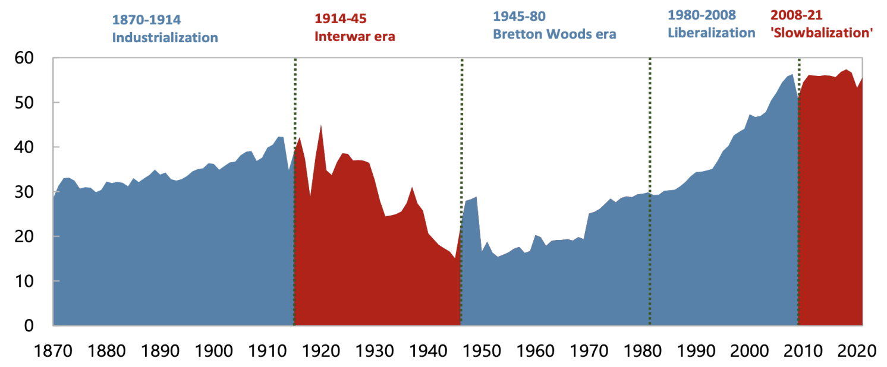
. . .
Explosion of international trade in long 19th century.
Abrupt end after WWI. Economic Hardship. Rise of populism.
Cold War 50s - Late 80s. Trade liberalization + Fragmentation in two blocks.
After crisis. Globalization has stagnated: slowbalization
But latest news are not too good: some indicators of geoeconomic fragmentation.
There is a research agenda here…
January 2023: IMF Staff Discussion Note: Geoeconomic Fragmentation and the Future of Multilateralism
March 2023: Series of blog posts by Aiyar and Alina (1, 2, 3)
May 2023: Conference on Geoeconomic Fragmentation, edited as CEPR ebook
December 2023: Gita Gopinath on Cold War II? Preserving Economic Cooperation Amid Geoeconomic Fragmentation
Geo-economic fragmentation and the world economy
Aiyar et al. propose the following definition:
Policy-driven reversal of global economic integration often guided by strategic considerations.
- domestic policy objective
- no autonomous shift in preferences or technology
- not an effect of prudential policies
Which were the more recent geopolitical shocks?
. . .
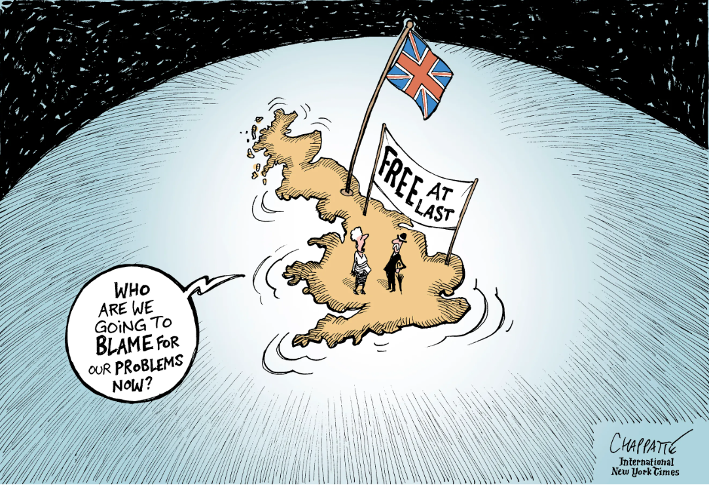
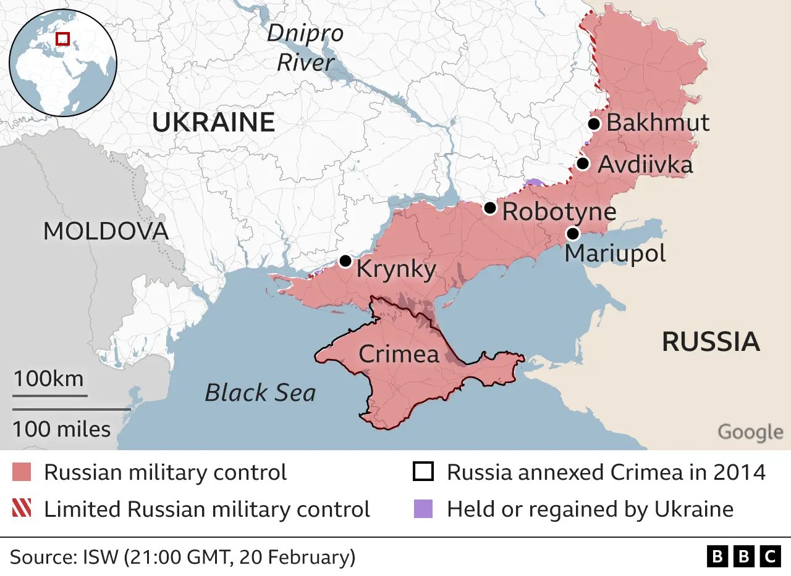
. . .
Do they fit the definition of a geo-economic fragmentation shock?
trump set tariffs on China: (unfair trade practices and intellectual property theft) discuss whether the definition applies.
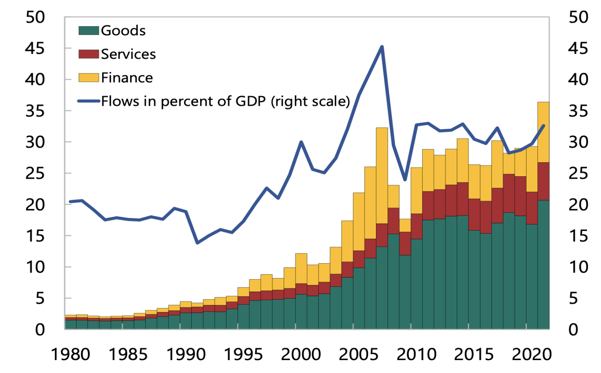
- big increase in financial services before “Global Financial Crisis”
- comment on the domino effect of the gfc
- banks have limited they cross-border exposure
- big increase in services, since the 80s
- referred to as servicification of trade
- for services and goods: slow evolution after 2005
- big increase in financial services before “Global Financial Crisis”
- domino effect of the gfc
- banks have limited they cross-border exposure
- big increase in services, since the 80s
- aka servicification
- common interpretation: goods are now bundled with services
- for services and goods: slow evolution after 2005
What drove the change?
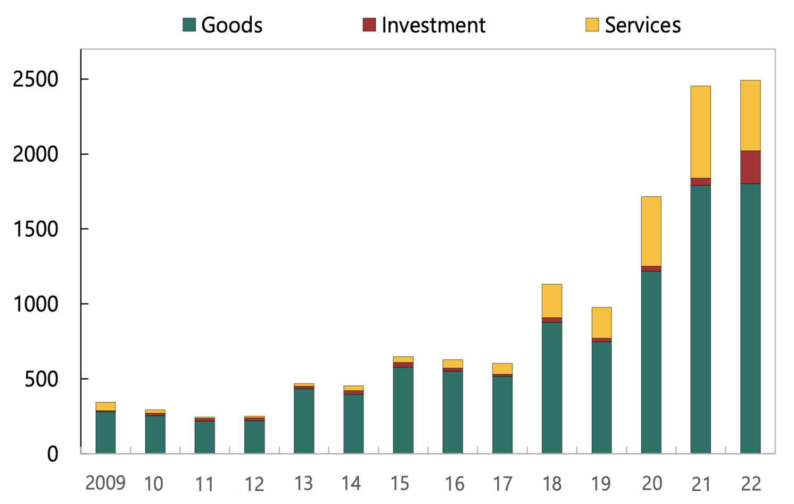
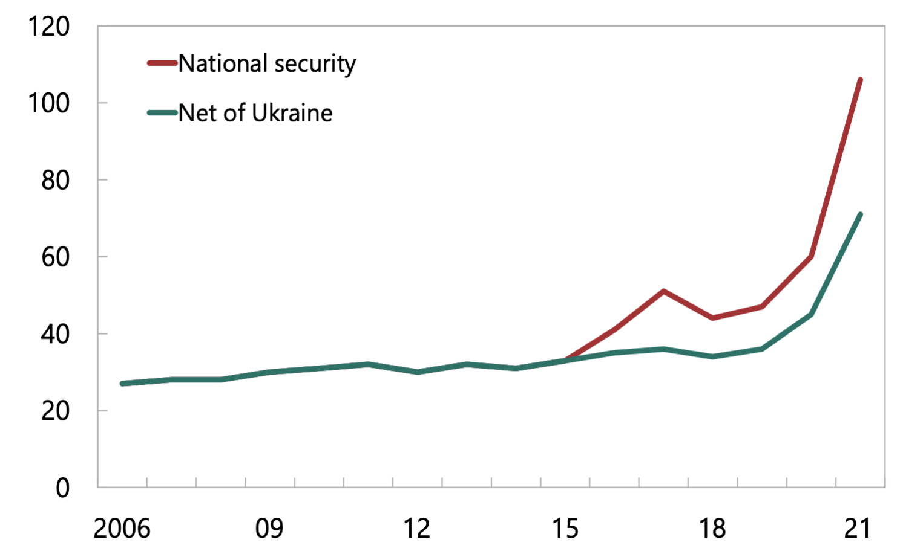
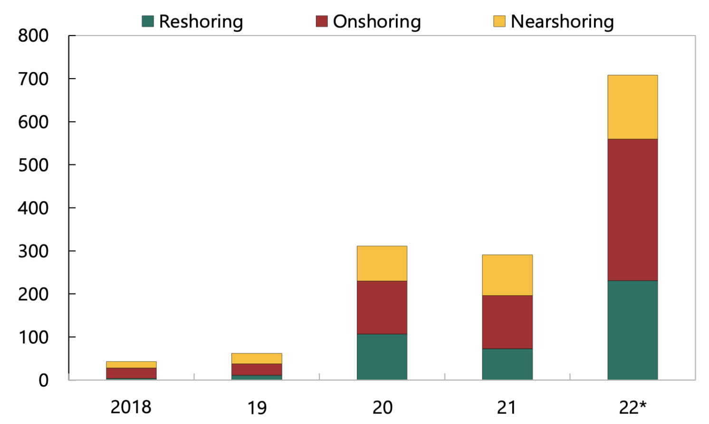
What drove the change ?
- protectionnism
- motivated by security issues …
- and the willingness to reoptimize supply chains
- both public and private decisions
Relocation Decisions in international business and management literature (from
- reshoring: bringing industries and value-creating activities ‘home’ to a specific location
- backshoring: activities return to their initial country of origin
- nearshoring: occurs when manufacturing is relocated to a country closer to ‘home’
What are the costs of fragmentation?
. . .
Essentially the opposite of the gains from trade and financial integration?2
. . .
What are they?
Neo-Classical Gains
international trade:
- in final goods: increase welfare thanks to the preference for variety of consumers
- in intermediary goods: optimize supply chain
international finance:
- allocate capital more efficiently
- provide risk-sharing
migration:
- reallocate labour force more efficiently
Explain Comparative Advantage
Can we measure those gains?
. . .
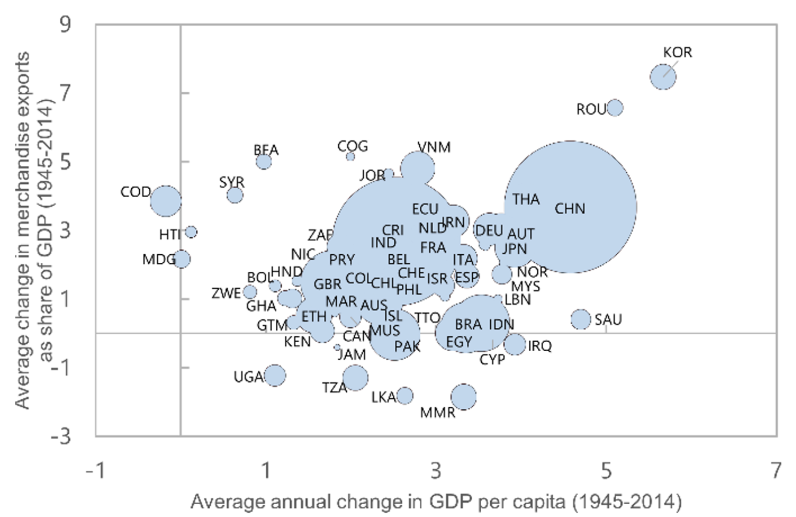
Just a motivational plot:
- Lots of outliers
- What about reverse causality?
- Common result in international trade:
- integration benefits the country producing the good that that is more valued (and more exported)…
- … and export more
Is it even possible to measure the gains from integration? Big long-standing debate:
- what is the counterfactual?
- a model is needed
Trade
- static models: (gravity model, CGE, new trade models)
- direct sizable gains
- short term analysis
- recent studies focus on (unequal) distribution of gains
- among countries
- within countries
- all effects are dwarfed compared with dynamic effects
- productivity gains / technology diffusion
- but few recent empirical studies
Does trade cause inequality?
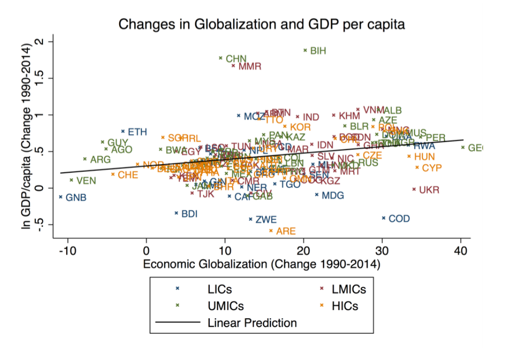
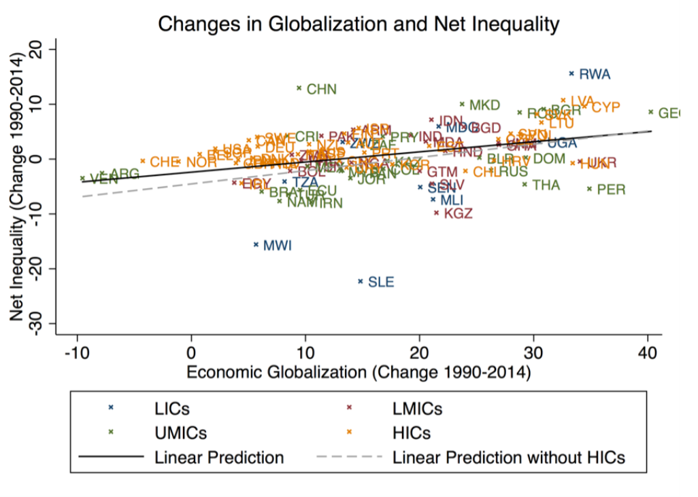
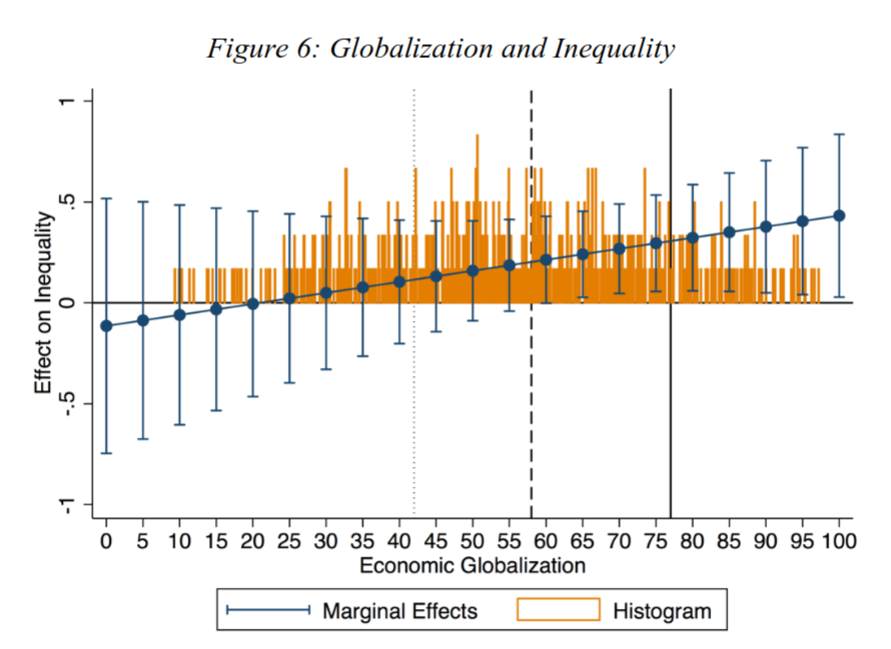
From The Distribution of Gains from Globalization 2018, by Lang and Tavares.
Finance / Capital Allocation
- gains are rather small in classical theoretical models at odd with economists’ beliefs
- The Elusive Gains from International Financial Integration, Gourinchas and Jeanne, 2004
- Financial Integration in a Risky World, Coeurdacier, Rey and Winant, 2020
- Small welfare gains from capital reallocation and risk-sharing. And and developped, safe, countries benefit more…
Finance / Capital Allocation
- and fielasticitynancial integration might have even have increased correlation between asset prices across borders
- see Global Financial Cycle, Miranda-Aggripino, Rey, 2022
What would be the cost of Cold War II?
Four studies:
- IMF2022
- Bolhuis et al (2023)
- Cerdeiro et al. (2021)
- Goes and Bekkers (2022)
Different Fragmentation Scenarios:
- In general West + China/Russia + Non-aligned.
- Nature of trade fragmentation is variable
Take Bolhuis as example. - basic CGE Goes and Bekkers:
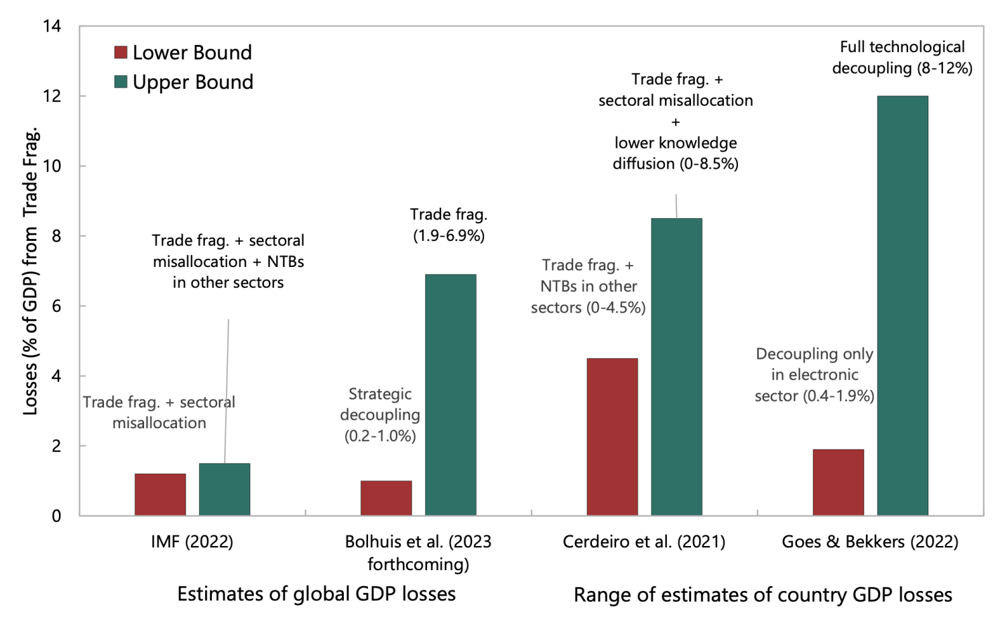
Losses (in the worst and best cases) are large
- compare to the welfare costs/ gains in the Nordhaus model
A big uncertainty is the calibration of elasticities
Short term / long-term elasticities
2021: can German reduce its dependence on Russian Gas?
. . .
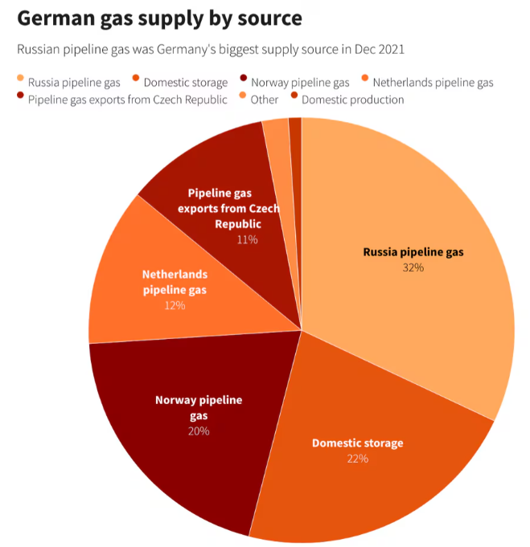
Short term / long-term elasticities
2021: can Germany reduce its dependence on Russian Gas?
- industry: Imp-Pos-Sible
- top economists What if Germany is cut off from Russian energy?
- cost: 0.2/0.3% of gdp / 80E per citizen
- depends on elasticity
. . .
2023: (second-winter) Germany buys all its gas on world markets
. . .
2030: green transition ???
Geo-economic fragmentation: Implications for the international monetary system
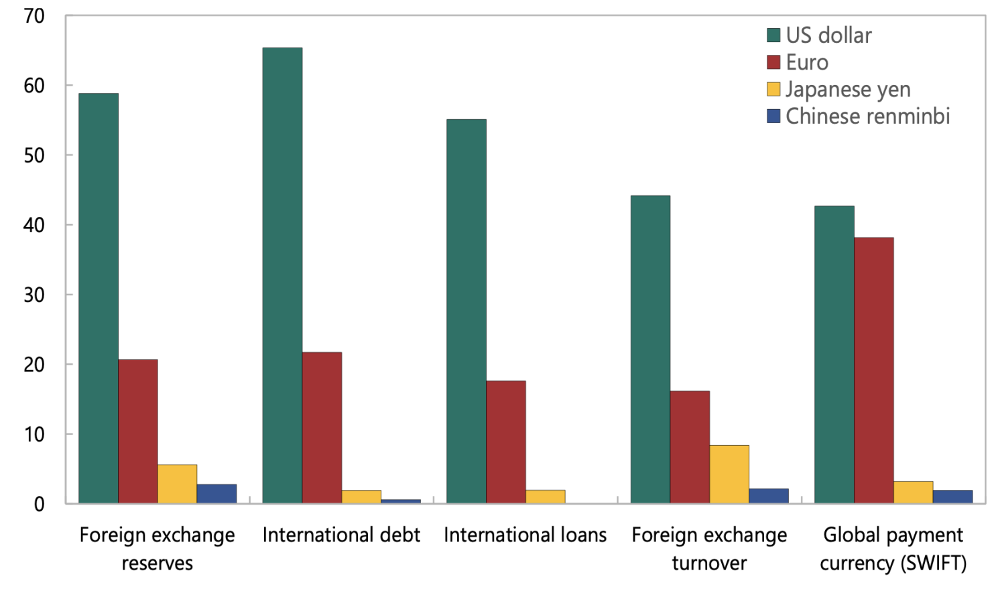
- Dollar was by far the dominant international currency (data from 2020/2021)
- Historically changes in dominant currencies have been slow.
- But reshoring or reshoring might change the situation
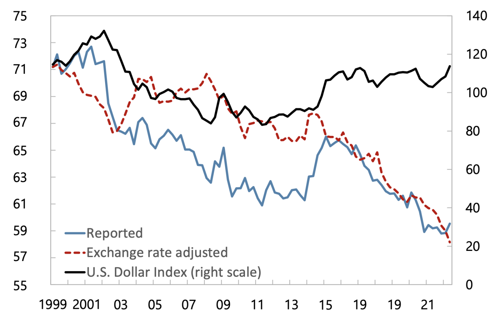
- The dollar is quickly loosing ground as a reserve currency
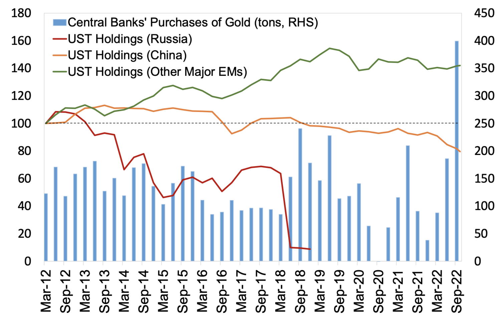
- The investor’s base of US treasuries is also shifting
- Reducing the role of US as liquidity provider
- Potentially causing financing isssues to US govt
Who lends to emerging markets?
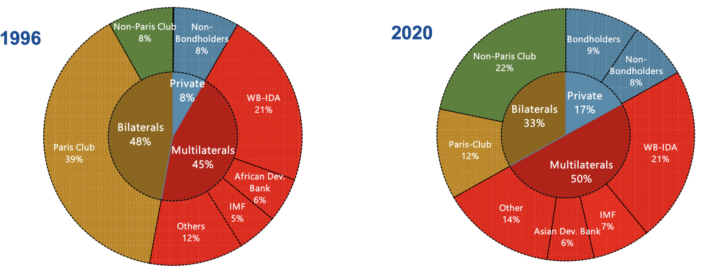
Global Safety Net
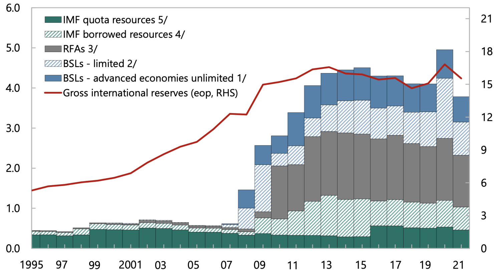
Sources of financial insurance.
Global Safety Net
- Self-Insurance has increased (see reserves)
- Regional Financial Arrangements have become more prominent since 2008
- IMF is only global lender with global rich.
Conclusion
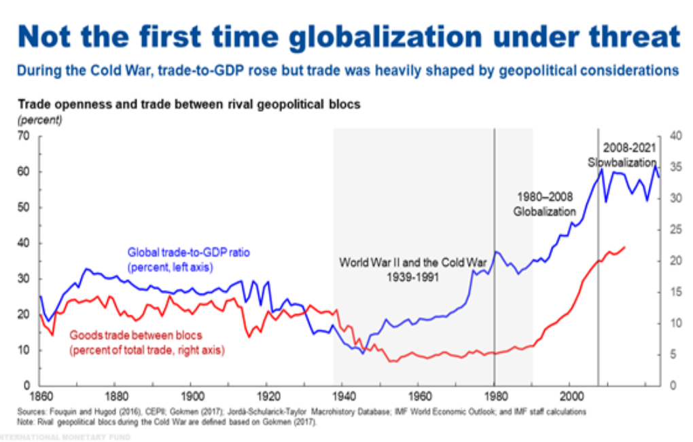
Globalization has been organized through multilateral organizations
. . .
- Trade: GATT (1945) then WTO
- Finance: IMF (1945)
. . .
These instutions have survived even though member states, have sometimes diverged politically.
1 trillions dollar question: how to save multilateralism when countries are pulling appart?
. . .
There are still big challenges that require a multilateral approach:
- green transition
- cf Nordhaus, green clubs
- financing developing countries
- responding to a world pandemia
. . .
Options: diplomacy, green corridors…
One last effort 🙏
. . .
Wooclap: EZATYU
Footnotes
IMF AREAER: Annual Report on Exchange Arrangements and Exchange Restrictions↩︎
this is the point of view from the authors…↩︎